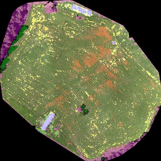

Farmers have interests to install the automation of checking grass and condition of raising cows using ICT techniques.
In particular, it takes a long time to measure the number of broad-leaved weeds, which badly affect the raising cows, for increasing farm crops efficiently and for observing the health condition of the raising cows.
We develop a farm management system that suggests plans for removing the broad-leaved weeds using grass images captured by a drone and helps in deciding the amount and the place to put fertilizers.
A region segmentation based on the deep-learning method can detect the broad-leaved weeds with an accuracy of around 80 %. Using the results of the segmentation, we can calculate the area covered by broad-leaved weeds in one region of the farm in order to provide suggestions for removing the weeds.
By comparing the GPS data of all the sensors, we can find grazing cows’ groups and the areas that have larger amounts of cow dung.
There is no need to add any fertilizers in these areas, which results in a reduction in cost.
Publication
- Satoki Tsuichihara, Shingo Akita, Reiichirou Ike, Masahiro Shigeta, Hiroshi Takemura, Takahiro Natori, Naoyuki Aikawa, Kazumasa Shindo, Yasuyuki Ide, and Shigeki Tejima,
Drone and GPS sensors-based grassland management using deep-learning image segmentation,
in the workshop on NFCR in the third IEEE International Conference on Robotic Computing (IRC2019), xxxx, Naples, Italy, Feb 25 2019 (accepted, to be appeard).
- 築地原 里樹, 竹村 裕, 名取 隆廣, 相川 直幸, 進藤 和政, 手島 茂樹, 一條 俊浩:
ドローンとGPSセンサを用いた牛と草地管理,
第19回計測自動制御学会システムインテグレーション部門講演会 (SI2018), 1D5-09, pp. 1110-1111, 2018.
- 名取 隆廣, 有山 夏子, 築地原 里樹, 竹村 裕, 相川 直幸:
IoTデバイスを用いた放牧牛の活動量計測システムの検討,
第33回信号処理シンポジウム, P-23, 2018.